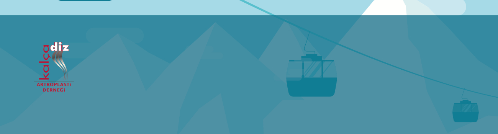

Değerli Meslektaşlarımız,
15 yıldan beri devamlı olarak düzenlemekte olduğumuz artroplasti kış toplantımız bu defa Bursa Uludağ' da 12-15 Mart 2020 tarihlerinde düzenlenecektir. Artroplasti alanında uzman davetli konuşmacılarımızın katılımına ek olarak yine ülkemizin çeşitli bölgelerinden artroplasti deneyimlerinin paylaşılacağı bir toplantı programı hazırladık.
Diz ve kalça primer artroplastileri, revizyon cerrahileri, sıra dışı olgularda yaklaşımlar, ''siz olsanız nasıl yapardınız'' oturumları ve tartışmalı panellerin yer alacağı programın doyurucu olacağına inanıyoruz . Ayrıca bu bilimsel programın sosyal aktiviteler ile daha da renklendirilmesi planlanmış ve toplantı akışı buna uygun hale getirilmiştir.
Kalça Diz Artroplasti Derneği çatısı altında iki yılda bir gerçekleştirilen ve bu sene Uludağ Karinna Otel'de gerçekleştirilecek olan 16. Artroplasti Kış Toplantısına siz değerli meslektaşlarımızı davet ediyoruz. Konuşmacı ve tartışmalı oturumlarda yer almak isteyen meslektaşlarımız için derneğimizin iletişim bilgileri internet sitemizde yer almaktadır.
Saygılarımla.
Kalça Diz Artroplasti Derneği Yönetim Kurulu adına,
Prof. Dr. Bülent Atilla
